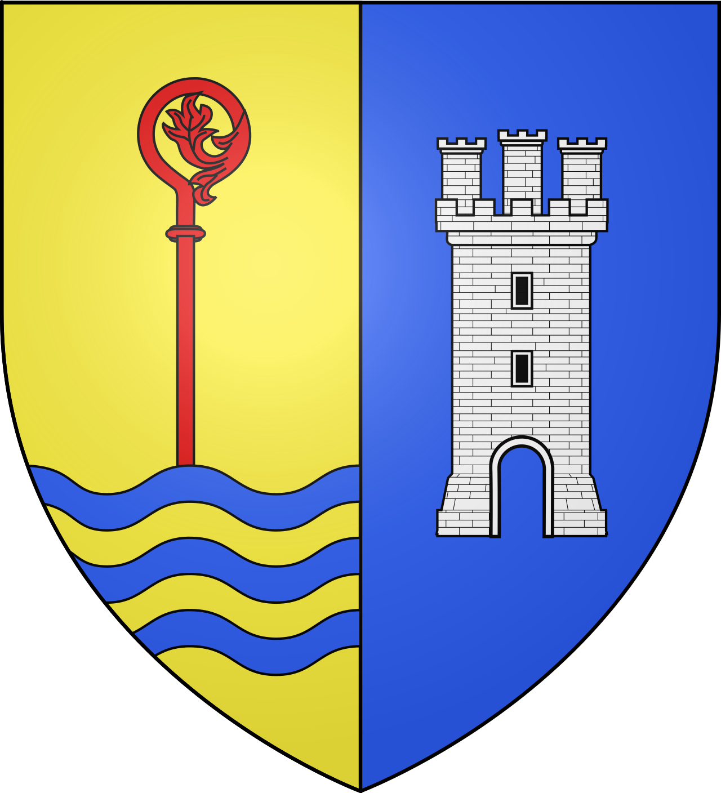
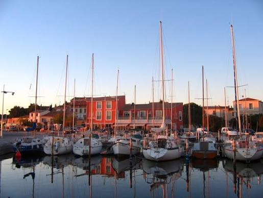
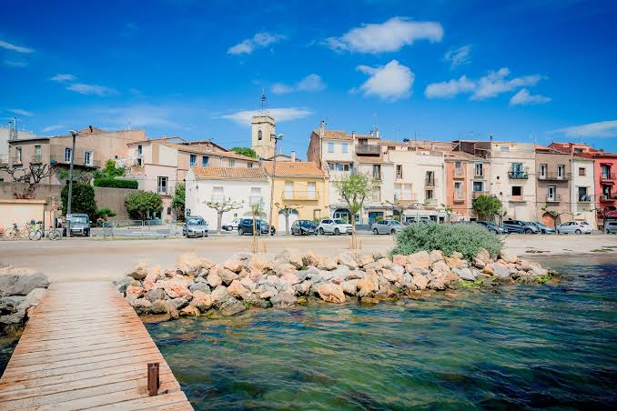

Bouzigues
Village Conchylicole


⟹ Huîtres · Pêche · Étang de Thau ⟸

Un village né du lien avec l’étang. Bouzigues s’étire sur la rive nord de l’étang de Thau. Les premières occupations évoquées par la tradition locale associent bergers de garrigue et pêcheurs semi-sédentaires. Les grottes et abris des Bausses témoignent du lien ancien entre l’homme, la falaise calcaire et les eaux plus abritées de la lagune.
La pêche, matrice du village. Durant des siècles, la population vit de la pêche dans l’étang et sur le littoral méditerranéen. Filets, capéchades, clovissières et petites embarcations rythment le quotidien. Les espèces pêchées — loups, dorades, anguilles, clovisses ou palourdes — nourrissent une culture maritime encore très présente.
1925 : une révolution conchylicole. Antoine Louis Tudesq et d’autres Bouzigauds mettent au point la technique dite de la « pyramide » pour l’élevage des huîtres. Cette innovation marque une étape fondatrice dans l’histoire moderne de la conchyliculture sur Thau et vaut à Bouzigues d’être considéré comme l’un de ses berceaux.

Après 1945 : l’essor des parcs à coquillages. L’élevage des huîtres et des moules prend une ampleur considérable après la Seconde Guerre mondiale. De nombreux pêcheurs deviennent progressivement conchyliculteurs. Les tables dressées dans la lagune composent alors un paysage productif unique, devenu l’un des symboles visuels du bassin de Thau.
Une technique méditerranéenne originale. Contrairement aux élevages sur estran de la façade atlantique, les coquillages de Thau sont élevés en suspension sous des tables. L’absence de marée importante a favorisé l’invention de méthodes adaptées à la lagune, transmises et perfectionnées de génération en génération.
1991 : le musée de l’Étang de Thau. Après une première exposition d’outils et de témoignages en 1981, un musée permanent ouvre le 21 octobre 1991. Il raconte les métiers de la pêche et de la conchyliculture, les gestes des « paysans de la mer » et les transformations de l’étang.
Bouzigues aujourd’hui. Le village a conservé une échelle intime autour du port, des ruelles et du rivage. Restaurants de coquillages, mas conchylicoles, barques et tables ostréicoles composent un paysage où activité économique et patrimoine vivant se confondent.

Repères : Pêche traditionnelle pluriséculaire · 1925, technique de la « pyramide » · après 1945, essor de la conchyliculture · 1991, ouverture du Musée de l’Étang de Thau.
Chronologie synthétique de BouziguesPour aller plus loin — sources et documentation :
• Ville de Bouzigues — patrimoine
• Musée de l’Étang de Thau
Antoine Louis Tudesq est associé, avec d’autres Bouzigauds, à la mise au point en 1925 d’une technique pionnière d’élevage des huîtres sur l’étang.
Les « paysans de la mer », conchyliculteurs de génération en génération, constituent la grande figure collective du village.
La mémoire des pêcheurs à la clovissière et aux capéchades rappelle l’économie qui précéda l’essor de l’ostréiculture.
Le village maintient une forte culture festive et maritime autour des produits de l’étang, des barques, des joutes et des rendez-vous gourmands.
Accès : Bouzigues se situe sur la rive nord de l’étang de Thau, entre Balaruc et Mèze.
Port : le port communal accueille plaisance et embarcations de pêche, au pied du centre ancien.
Musée : le Musée de l’Étang de Thau – Louis Higounet se trouve quai du Port de Pêche.
Dégustation : de nombreux mas conchylicoles et restaurants bordent la lagune ; privilégiez les producteurs identifiés et les horaires d’ouverture affichés.
Balade : la voie verte et les promenades littorales permettent de découvrir les paysages de tables à huîtres sans voiture.